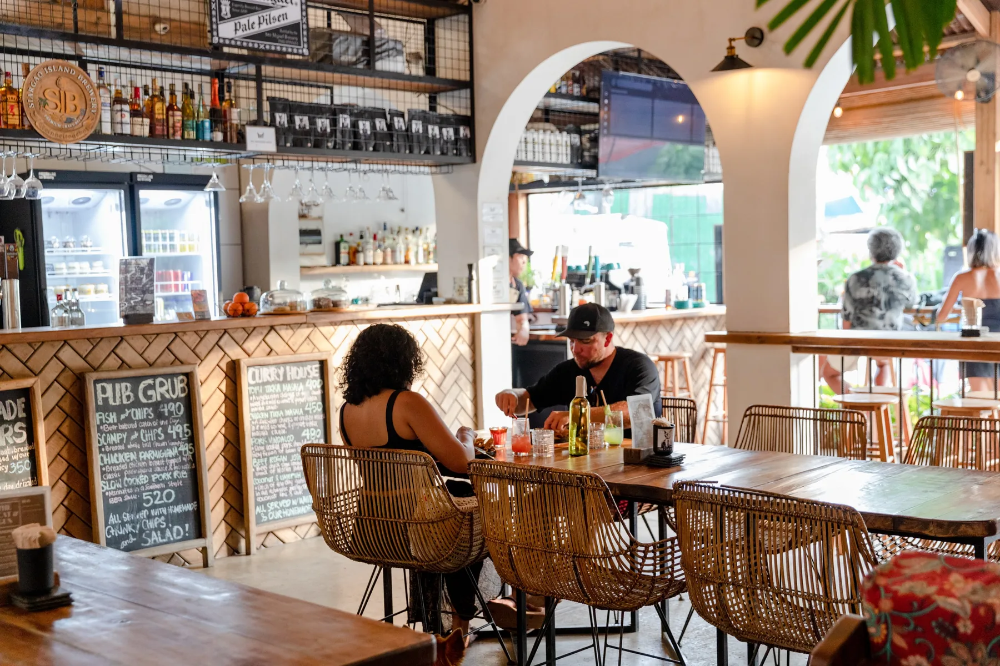
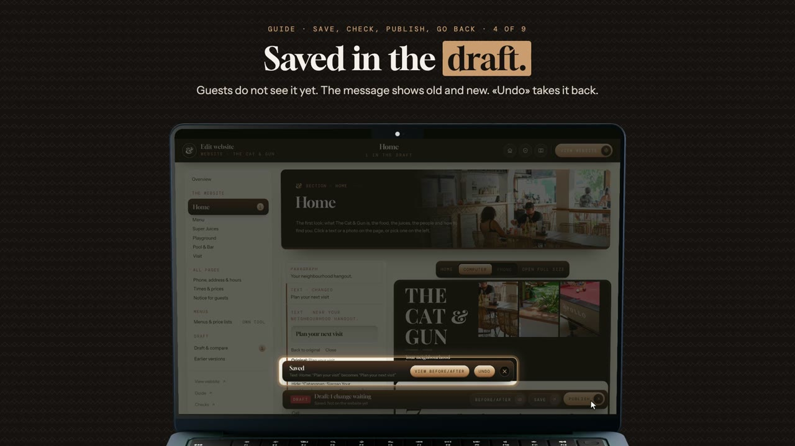
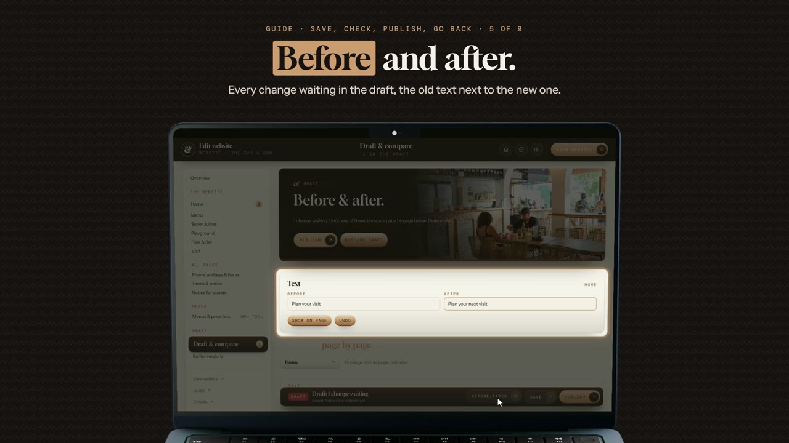
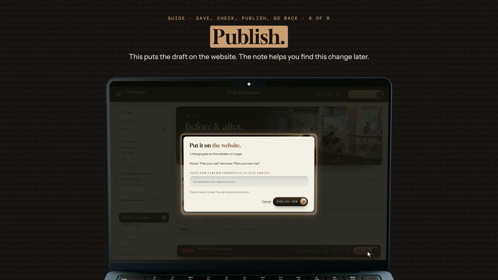
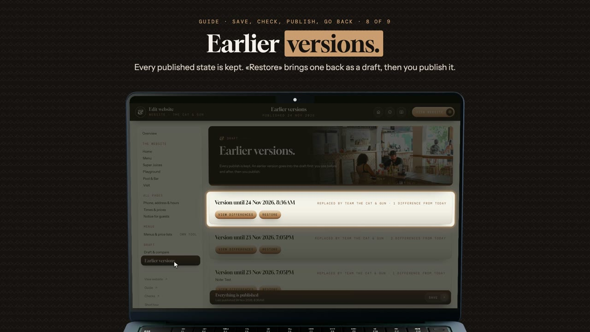
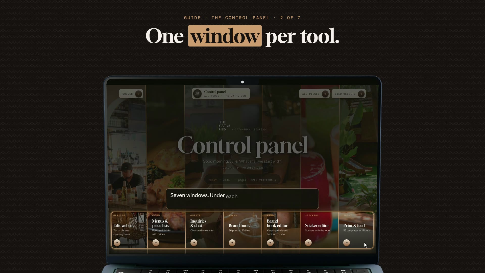
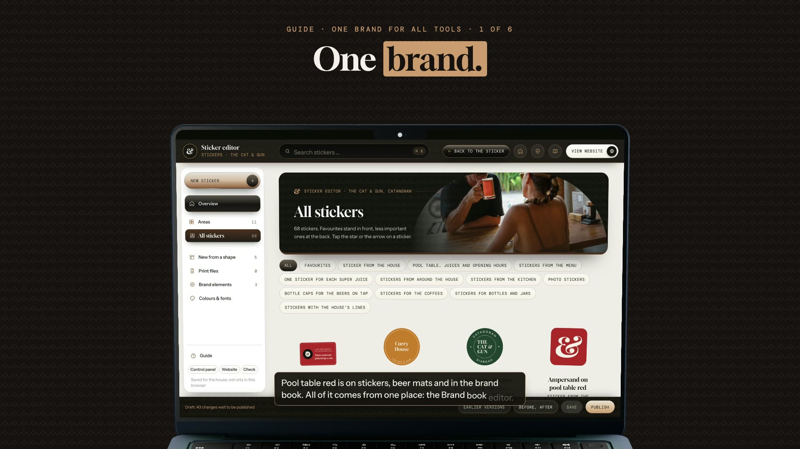

Start here
The control panel and the way every tool saves, checks and publishes.
Every tool of The Cat & Gun opens from the control panel. Under each name it shows what is waiting in that tool.
Edit website, Menus & price lists, Brand book editor and Sticker editor share one bar at the bottom: Save, Before / after, Publish and Earlier versions. Inquiries & chat works the same way. Once you know this order, you know it for every tool.
From a change to the website
Four steps in every tool with the bar at the bottom.




The change goes into the draft.
Old and new side by side.
The draft goes online, with a note.
Every published state is kept.
Four steps, the same in every tool with the bar at the bottom.
Guides and lessons
3 guides, 3 ready.

The control panel
Every tool of The Cat & Gun opens from the control panel. The video shows the seven windows, the visits of today, the bar at the top and the section of each tool.

Save, check, publish, go back
The bar at the bottom, Save, Undo, Before and after, Publish with a note and Earlier versions. Edit website, Menus & price lists, Brand book editor and Sticker editor use the same bar.

One brand for all tools
A colour is changed in the Brand book editor and published. Then the Sticker editor, Print & feed and the Brand book show the new colour. The change in the video is an example in a copy.
What Control panel can do
Every function, area by area. Open a drawer; its picture plays that part of the guide.
Control panel
Every tool of The Cat & Gun opens from the control panel.
01Greeting and houseThe top of the page greets Julie and names the house.3 functions
- The greeting changes with the time of day: «Good morning, Julie.», «Good afternoon, Julie.» or «Good evening, Julie.».
- The place, the address and the opening hours of the house stand next to it, read from the website.
- The date is written in British English.
02One window per toolSeven windows open the tools.5 functions
- Each window carries the name of a tool: Edit website, Menus & price lists, Inquiries & chat, Brand book, Brand book editor, Sticker editor and Print & feed.
- Under each name stands what is waiting in that tool.
- If a tool does not answer, the window shows a sentence without a number.
- A tool that is not delivered yet shows «In progress».
- A click on a window opens the tool.
03Today on the websiteOne line shows the visits of today.3 functions
- «Today … visits · … pages» shows the visits and pages viewed today.
- «Open Visitors» opens the Visitors tool.
- Without a number from Visitors, «–» stands in its place.
04The bar at the topThe bar at the top leads to every tool and comes back when you scroll up.5 functions
- «Control panel» brings you back to the top of the page.
- The keys 1 to 8 open the tools.
- «All pieces» shows every printed piece of the house.
- «View website» opens the website.
- «Guides» leads to the guides.
05A section per toolFurther down, each tool has its own section, «No. 1 of 8» to «No. 8 of 8».5 functions
- The section names what the tool is for in one line.
- «How it works» explains in three lines what you do in the tool.
- Where the tool gives them, its numbers stand in the section, for example «Sections» and «Pages» for Edit website.
- The button at the end opens the tool, for example «Open Edit website».
- The section of Print & feed also has «All pieces».
06Visitors in numbersThe section of Visitors shows numbers of the website.3 functions
- It shows «Visits», «Pages viewed» and «Countries».
- It says that visits are counted without cookies and never with names.
- «Open Visitors» opens the tool.
07Footer and helpThe footer holds the details of the house and the way to help.4 functions
- The footer names the house, the address, the opening hours and the phone number.
- «View website» opens the website.
- If the control panel does not start, a page says so and offers «Reload».
- A short tour in five steps shows the page.
Before you publish
Each tool with the bar at the bottom works in the same order:
Change what you need and press Save. It goes into the draft, guests do not see it yet.
Open Before / after and read the old and the new version side by side.
Publish and write a short note, so you find this change later.
If something is wrong, open Earlier versions and restore the last good state.
What you know now
Every tool opens from the control panel.
Saved changes wait in the draft.
Guests see a change only after Publish.
Every published state can be restored.